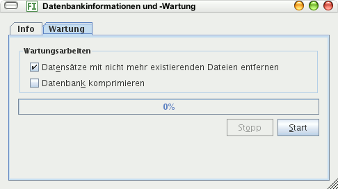

Dieser Menübefehl öffnet einen Dialog mit Informationen über die Datenbank und Möglichkeiten zur Wartung.
Auf dem Info-Kartenreiter sehen Sie die Anzahl aller Bilder in der Datenbank neben dem Dateinamen. Die Anzeige wird fortlaufend aktualisiert: Wird ein neues Bild eingelesen, erhöht sich die angezeigte Datensatzanzahl sowie die Anzahl neuer Metadaten.
Der Kartenreiter Wartung bietet an, Datensätze zu entfernen, für die es keine Bilder mehr gibt. Das ist sinnvoll, da sonst bei Suchen nicht mehr existierende Bilder berücksichtigt werden.
Das Komprimieren der Datenbank verkleinert ihre Dateigröße. Dies ist in der Regel nicht nötig, kann aber sinnvoll sein nach Programmupdates, bei denen die Datenbank modifiziert wurde oder nachdem Sie sehr viele Metadaten verändert oder gelöscht haben.
